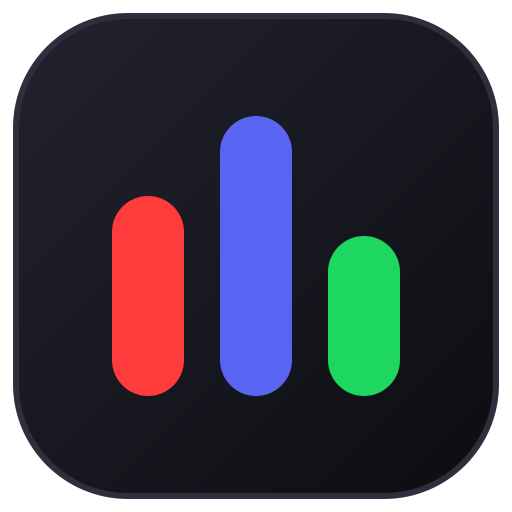

PoseyHubpar PoseyDevsPoseyHub réunit YouTube, Discord et Spotify dans une vraie appli Windows. Tu passes de l'un à l'autre en un clic, ta musique continue pendant que tu discutes, et tes notifications restent à portée de main.
Une barre sur le côté, trois boutons. Chaque service garde ta connexion et continue de tourner quand tu changes d'onglet.
Tes abonnements, tes vidéos et le plein écran qui prend vraiment tout l'écran.
Ctrl + 1Messages, appels, micro, caméra et partage d'écran. Les messages non lus s'affichent sur l'icône.
Ctrl + 2Un lecteur relié à ton compte par la connexion officielle de Spotify : playlists, recherche, appareils.
Ctrl + 3Quand tu fermes la fenêtre, PoseyHub se range près de l'horloge et ta musique continue.
Pastilles de messages non lus dans la barre et sur l'icône de la barre des tâches, et notifications Windows pour Discord.
Clic droit sur l'icône près de l'horloge : lecture, pause, titre suivant, sans rouvrir la fenêtre.
Les nouvelles versions s'installent toutes seules quand tu quittes PoseyHub. Pas besoin de désinstaller.
Chaque service garde ses propres cookies sur ton PC. Les accès Spotify sont chiffrés avec le coffre de Windows.
Deux minutes, et c'est fait une fois pour toutes.
Clique sur « Télécharger pour Windows ». Tu obtiens PoseyHub-Setup.exe.
Windows peut dire « Windows a protégé votre ordinateur », parce que l'appli n'est pas signée. Clique sur Informations complémentaires puis Exécuter quand même.
Ouvre PoseyHub depuis le raccourci du bureau et connecte-toi à YouTube, Discord et Spotify. C'est retenu pour la suite.
L'onglet Spotify est un lecteur PoseyHub relié à ton compte par Spotify for Developers. La première fois, PoseyHub t'explique tout pas à pas.
Sur developer.spotify.com : « Create app »,
adresse de retour http://127.0.0.1:47823/callback, puis coche Web API et Web Playback SDK.
Copie le Client ID de ton appli dans PoseyHub, puis clique sur « Se connecter avec Spotify ». La page officielle s'ouvre dans ton navigateur.
Spotify demande un compte Premium pour créer une appli et piloter la lecture. Ton appli Spotify peut servir à 5 comptes au maximum. La musique peut jouer dans PoseyHub ou dans l'appli Spotify officielle (PC, téléphone, enceinte).
Oui, entièrement. PoseyHub est un projet perso de PoseyDevs.
Les applis non signées avec un certificat payant déclenchent SmartScreen. Le code de PoseyHub est public sur GitHub, et le .exe est fabriqué directement par GitHub à partir de ce code.
Ça arrive parfois avec les applis de bureau. Connecte-toi directement sur YouTube avec ton e-mail et ton mot de passe, plutôt qu'avec « Se connecter avec Google » depuis un autre site.
Clic droit sur l'icône près de l'horloge, puis « Quitter PoseyHub ». Tu peux aussi décocher « Garder ouvert dans la zone de notification » dans les réglages (roue crantée en bas à gauche).
Paramètres Windows → Applications → PoseyHub → Désinstaller. Tes connexions sont stockées dans %APPDATA%\PoseyHub.